Unix Navigation, Files, Pipes and Shell Scripts
2026-10-05
chmod) that let them runcommand -options argumentsman cmd, cmd --help, tldr cmd, and the book’s Unix Command ReferenceOpen the terminal (in Positron or standalone) and type each line yourself:
whoami # who does the computer think you are?
pwd # where are you?
ls # what is here?
ls -lh # ...with sizes and dates
echo "hello world" # your first command with an argument
man ls # read a manual page; press q to quit
mkdir -p ~/projects # make a home for your course work
cd ~/projects && pwd # go there and confirmStickle_RNAseq.tsv - RNA-seq read counts for 600 genes in the guts of 80 threespine stickleback from the Cresko LabIndividual, Genotype, Microbiota, Geno&Micro, and Gene1-Gene600grep (L03), read it into R and Python (L05-06), plot it (L06-07), and run it on Talapas (L08)Download it once into your course folder:
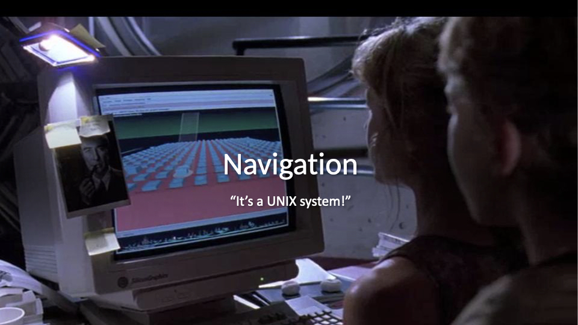
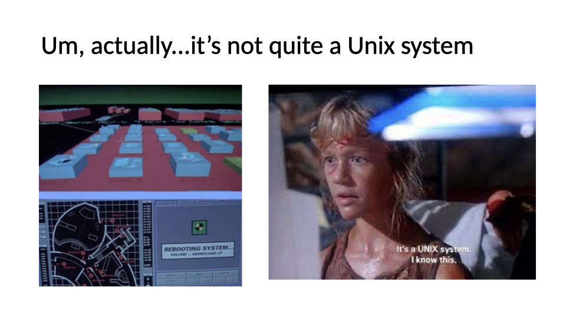
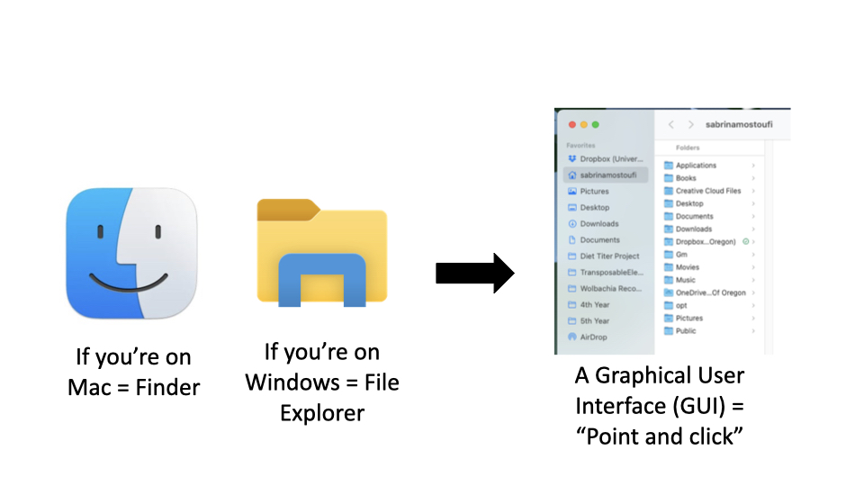
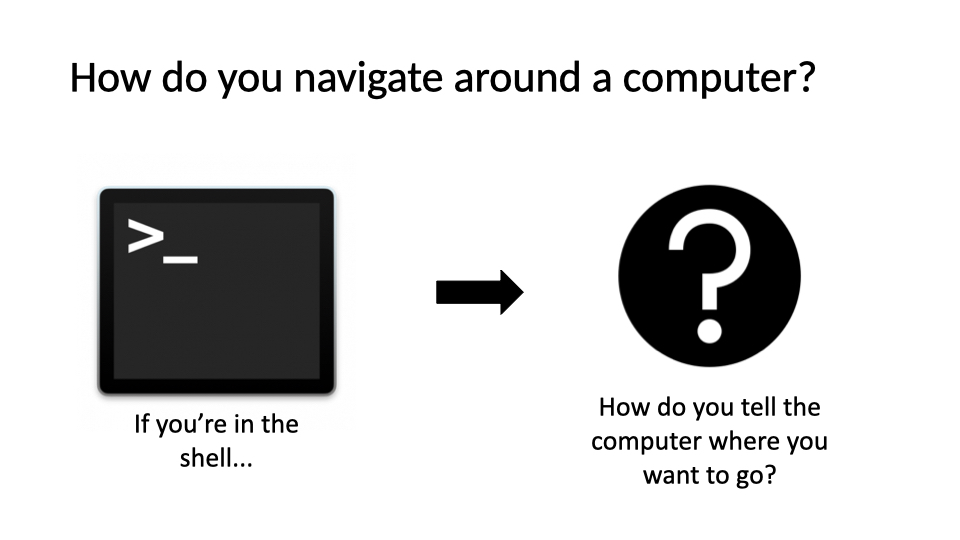
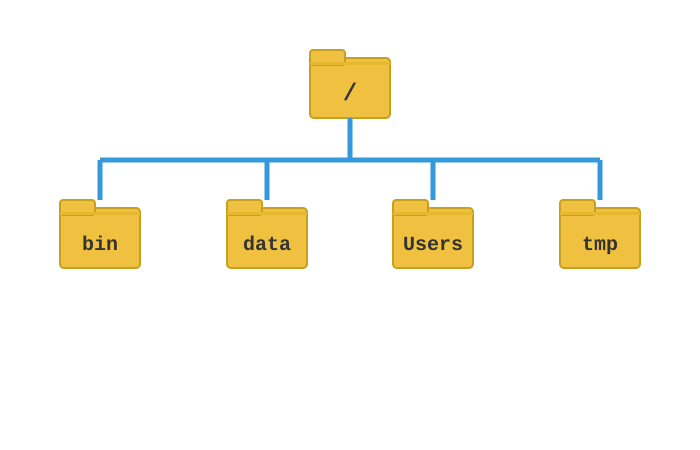
~ is shorthand for your home folder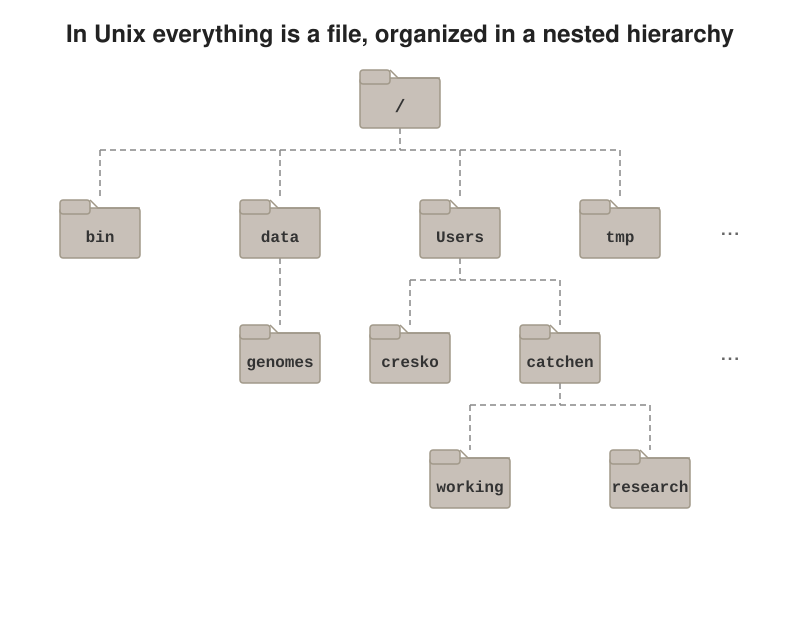
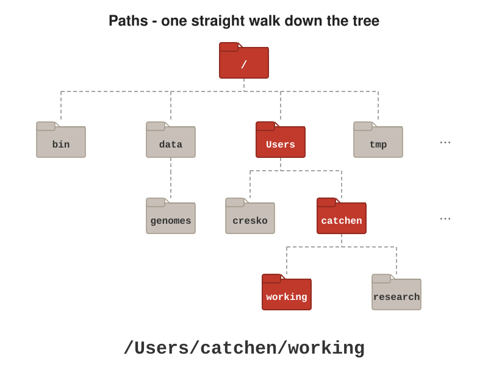
. refers to the directory you are in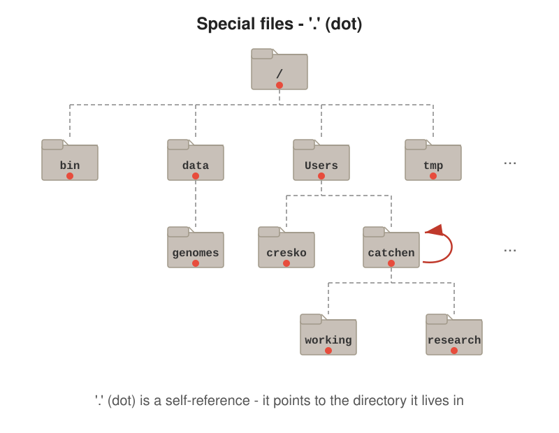
.. refers to the parent directory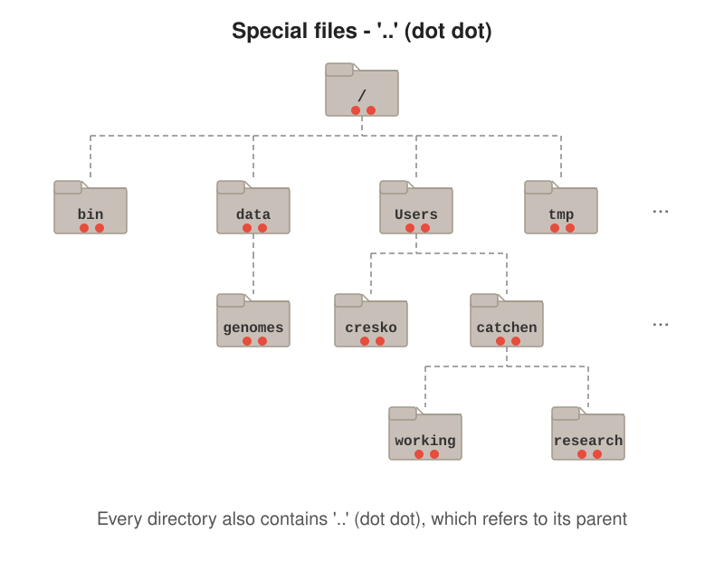
..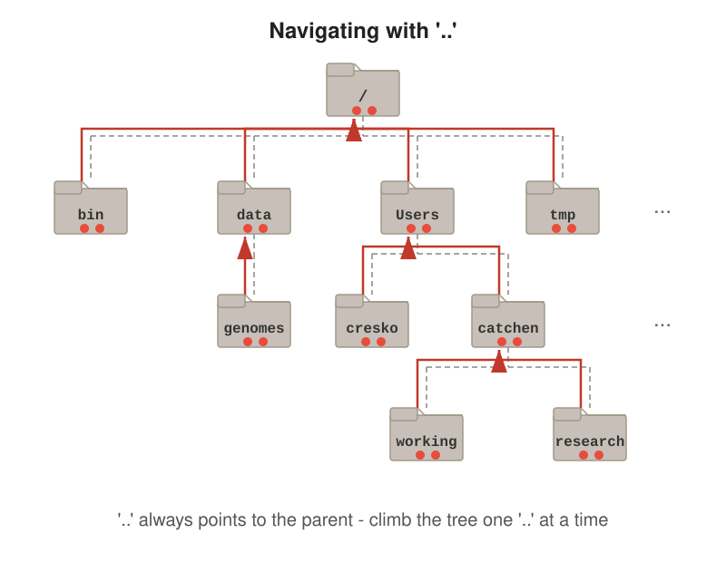
/ (e.g., /Users/wcresko/Documents) - works from anywhere../Documents) - portable, but depends on your current directory. refers to the current directory.. refers to the parent directory~ refers to your home directorypwd = “print working directory”: where am I right now?ls = “list” all directories and files in your current position
ls -F = mark which results are directories, files, etc.ls -l = “long format”: permissions, owner, sizes, datesls -S = sort by size; ls -t = sort by time, newest first; add -r to reverse either ordercd = “change directory”: move to a new position based on your path argument
cd .. = go up one directorycd ~ = go to my home directorycd - = go back to the directory you were in last (like a browser’s back arrow)mkdirnano, touchmvmvcprmrmdirwccat, less, head, tail - gets its own section shortly)nano^ shortcuts along the bottom mean Ctrl:
Ctrl-O, then Enter = save (“write Out”)Ctrl-X = exit (it offers to save if you forgot)Ctrl-K cuts a whole line; Ctrl-U pastes it backnano is what you’ll have on Talapas (L08), where there is no point-and-click| Command | Effect |
|---|---|
ls -l |
Long listing: permissions, owner, size, date |
ls -a |
Show hidden “dot” files (names starting with .) |
ls -lh |
Human-readable sizes (K, M, G) |
ls -lt |
Sort by modification time, newest first |
cp -r src/ dst/ |
Copy a directory and everything in it |
rm -i file |
Ask before deleting each file |
rm -r dir/ |
Delete a directory and all its contents - no undo! |
mkdir -p a/b/c |
Make nested directories in one step |
Warning
rm -rrm -r *) without thinking twice.touch sample_01.fastq sample_02.fastq sample_03.fastq control.fastq notes.md
ls *.fastq # everything ending in .fastq
ls sample_*.fastq # the three sample_ files
ls sample_0?.fastq # ? matches exactly one character
ls sample_0[12].fastq # only sample_01 and sample_02
ls *.{fastq,md} # brace expansion: .fastq OR .md| Pattern | Matches |
|---|---|
* |
Any string of characters (including none) |
? |
Exactly one character |
[abc] |
Any one character in the set |
[a-z] |
Any one character in the range |
{foo,bar} |
Either foo or bar (brace expansion) |
Tip
rm *.fastq deletes every matching file at once.ls *.fastq first to see exactly what will be affected.cat = concatenate and display files
less = view file page by page
more = similar to less but simpler
head = display first 10 lines (default)
head -n 20 file.txt shows first 20 linestail = display last 10 lines (default)
tail -n 20 file.txt shows last 20 linestail -f file.txt follows file as it grows (useful for logs)< = redirect input from a file
command < input.txt<< = here document (multi-line input)
wc -l < data.txt counts lines in data.txtsort < names.txt sorts contents of names.txtstdin> = redirect output to a file (overwrites)
ls -l > filelist.txt>> = append output to a file
echo "new line" >> existing.txt2> = redirect error messages
command 2> errors.txt&> = redirect both output and errors
command &> all_output.txt| = the pipe operator
command1 | command2 | command3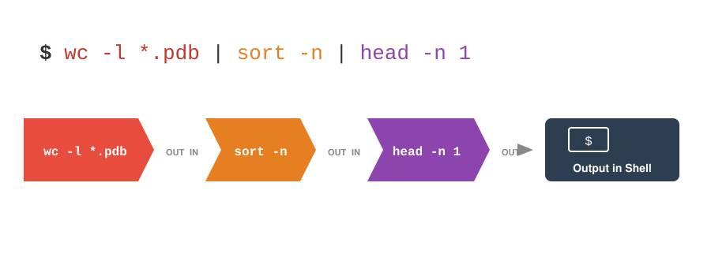
Each command’s output becomes the next command’s input
grep "pattern" file.txt | wc -lcat file.txt | sort | uniqsort data.txt | head -5ls -l | sort -k5,5n | tail -3ls -l is the size)Note
grep searches for text patterns (all of L03) cut picks columns (you’ll use it on the course data in a few slides).cat data.csv | cut -d',' -f2 | sort | uniq -c | sort -rntail -f logfile.txt | grep ERRORwc -l *.txt | sort -nfind + xargs do this across whole directory trees - L04)Note
The backslash allows you to continue commands on multiple lines for readability
less for large files instead of cat> overwrites, >> appendstee to display and save the top 5 numbers.sh and keep them in your project’s scripts/ folderPut these two lines in a file called hello.sh (using nano, Positron, or even cat >):
#! tells Unix which program should interpret the rest of the file - here, bash# is a comment - write lots of themls -l is telling yourwx:| Characters | Who | Meaning | |
|---|---|---|---|
- |
1 | file type | - file, d directory, l link |
rw- |
2-4 | user (owner) | owner can read and write |
r-- |
5-7 | group | group members can read |
r-- |
8-10 | other | everyone else can read |
r = read, w = write, x = executex is permission to run the file as a programrw- but never x - that is why ./hello.sh was deniedx means “may cd into it”chmodchmod (change mode) adds or removes permissionsu/g/o/a) +/- which (r/w/x)More examples of the same pattern:
Tip
chmod +x once before ./script.sh will work.bash script.sh works without x, because there you are running bash, not the script.chmod by the numbersr=4, w=2, x=1:| Number | Triplets | Meaning | Typical use |
|---|---|---|---|
755 |
rwxr-xr-x |
you do everything; others read + run | scripts |
644 |
rw-r--r-- |
you read + write; others read | data, documents |
600 |
rw------- |
only you, at all | sensitive files |
444 |
r--r--r-- |
read-only for everyone | raw data |
755 out loud as its triplets until it feels natural| Script | What it does |
|---|---|
file_inventory.sh |
Reports every file in a folder - grouped by file type, largest total first, with each file’s permissions and size - written out to a report file |
make_project.sh |
Builds the Lecture 01 project structure (data/raw, scripts/, output/, docs/) with template README.md, .R, .py and .qmd files |
backup_project.sh |
Snapshots a project into a dated .tar.gz (skipping expendable output/) |
filter_rows.sh + total_counts.sh |
A two-script pipeline for the course dataset: the output of one is the input of the other |
Because both pipeline scripts read stdin and write stdout, they chain with | exactly like built-in commands:
filter_rows.sh keeps the header + the rows you ask for → total_counts.sh sums the 600 gene columns per fishsort ranks, head trims - your scripts are now part of the Unix toolkitYou downloaded it at the start of class - now use what you learned today:
cd ~/projects/comptools
ls -lh data/ # how big is it?
wc -l data/Stickle_RNAseq.tsv # how many lines (fish + header)?
head -n 3 data/Stickle_RNAseq.tsv | cut -f 1-6 # first rows, first 6 columns only
cut -f 2 data/Stickle_RNAseq.tsv | sort | uniq -c # how many fish per genotype?
cut -f 3 data/Stickle_RNAseq.tsv | sort | uniq -c # ...and per microbiota treatment
head -n 1 data/Stickle_RNAseq.tsv | tr '\t' '\n' | wc -l # how many columns?Tip
cut -f picks columns from a tab-separated filesort | uniq -c counts categoriestr '\t' '\n' turns one wide header line into one name per line so wc -l can count themchmod +xgrep and regular expressions for searching filesBioE Computational Tools 2026 - Knight Campus